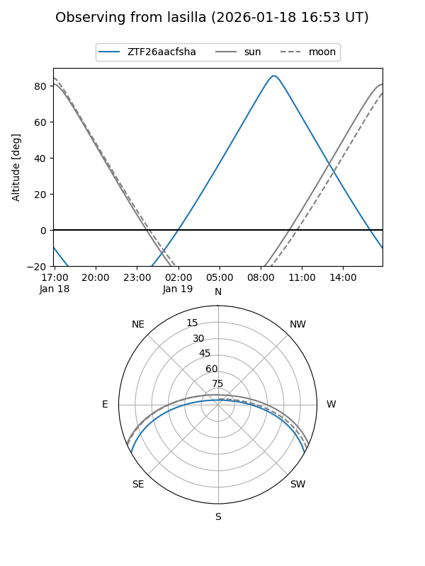
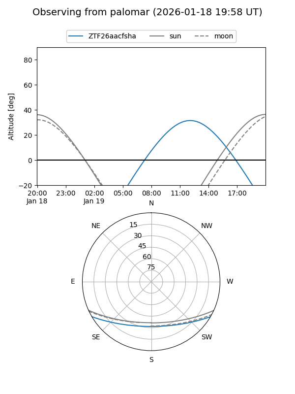

ZTF26aacfsha
Target ZTF26aacfsha at 2026-01-18 21:16
Aliases and brokers:
FINK: link
Lasair: link
ALeRCE: link
alt names
ZTF26aacfsha (ztf,fink_ztf)
Coordinates:
equatorial (ra, dec) = 182.5865,-24.92090
equatorial (HMS+DMS) = 12:10:20.77,-24:55:15.23
galactic (l, b) = (291.2455,+37.01661)
Flags:
Photometry:
last ztfr=19.56
1 ztfr detections
Lightcurve

Visibility


Additional plots